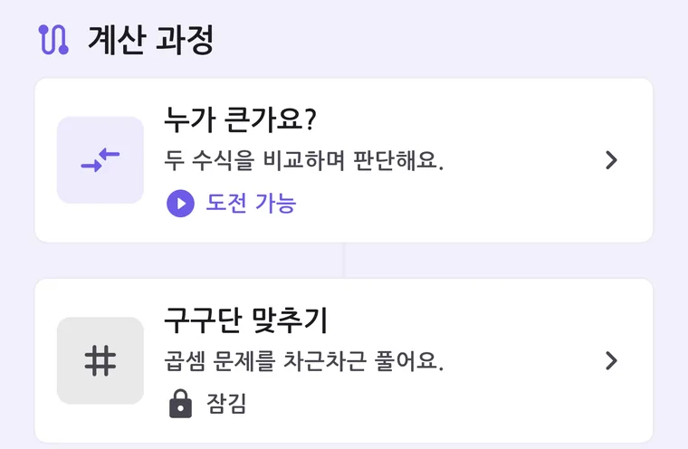
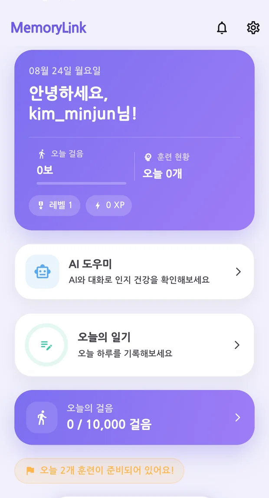
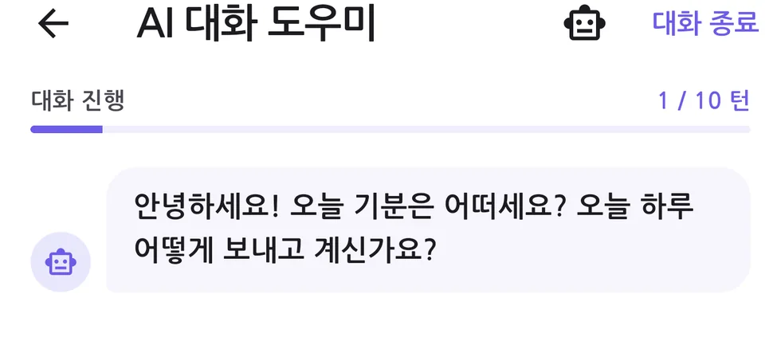

매일 조금씩, 잠금이 풀리듯
계산·논리·기억·집중 네 영역을 다루는 훈련 7종. 난이도는 성적에 따라 자동으로 조정되고, 다음 단계는 앞 단계를 마쳐야 열립니다. 오늘 할 만큼만 하도록 목표는 하루 3개로 잡았습니다.
누가 큰가요?규칙 찾아보기
도형 스도쿠구구단 맞추기
범주와 훈련문장 읽기
일상 회상


인지 훈련만 있는 앱, 걸음 수만 세는 앱은 이미 많습니다. MemoryLink는 네 가지 생활 신호를 같은 화면에서 이어 붙여 "요즘 어떤지"를 한눈에 보이게 합니다.
계산·논리·기억·집중 네 영역을 다루는 훈련 7종. 난이도는 성적에 따라 자동으로 조정되고, 다음 단계는 앞 단계를 마쳐야 열립니다. 오늘 할 만큼만 하도록 목표는 하루 3개로 잡았습니다.

걸음은 자동으로 세고, 수면·혈압·식이는 몇 번의 탭으로 남깁니다. 인지 점수 옆에 놓이면 "잠 못 잔 주에 점수가 어땠는지"가 보입니다.
"오늘 아침에 뭘 드셨어요?" 같은 물음으로 하루를 되짚습니다. 네트워크가 끊겨도 대화는 끊기지 않습니다 — 온디바이스 모델과 규칙 기반 응답으로 세 겹의 대비책을 뒀습니다.

영역별 지표를 막대와 상태로 보여 주고, 판정 대신 지난주 대비 어느 쪽으로 움직였는지를 짚습니다.
매일 전화해 "밥은 드셨어요?"를 묻기는 어렵습니다. 보호자는 활동·인지 요약만 봅니다. 일기 원문이나 대화 내용은 넘어가지 않습니다.
인지 저하 위험군은 곧 디지털 취약계층이기도 합니다. 앱의 진입 장벽 자체가 서비스 실패의 원인이 되기 때문에, 대비와 터치 타겟은 취향이 아니라 요건으로 다뤘습니다.
기본 · 크게 · 아주 크게. 안드로이드 접근성 설정으로 이미 키워 둔 배율을 앱이 되돌리지 않습니다.
본문 4.5:1, 조작 경계선 3:1을 넘깁니다. 색 값을 되돌리면 자동 테스트가 막습니다.
핵심 안내를 읽어 주고, 버튼 반응을 진동으로도 전합니다. 화면을 잘 못 보는 상황에 대비합니다.
Material 권고는 48dp지만, 진전·관절 가동범위 저하를 기준으로 56dp를 하한으로 뒀습니다.
훈련 7종의 화면 요소에 의미 라벨을 붙였습니다. 색으로만 전달하는 정보를 남기지 않습니다.
전국 치매안심센터 256곳을 앱 안에 담았습니다. 점수와 무관하게 언제든 찾아갈 수 있습니다.
인지 건강을 다루는 앱은 조금만 넘어가도 의료의 영역이 됩니다. 할 수 있는 것보다 하지 않기로 한 것을 먼저 정했습니다.
접근성과 안전은 선언이 아니라 회귀를 막는 장치로 지킵니다. 아래 수치는 매 변경마다 자동으로 확인합니다.